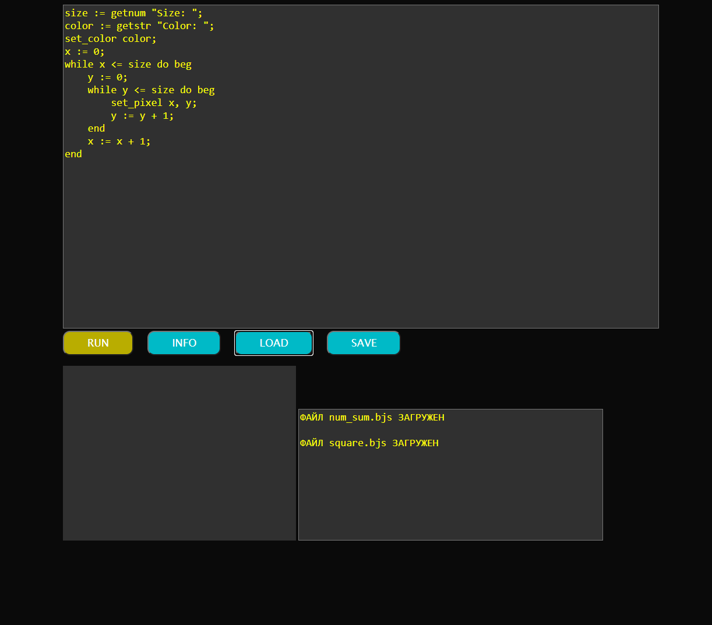
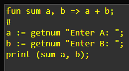
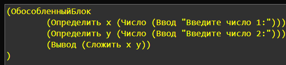
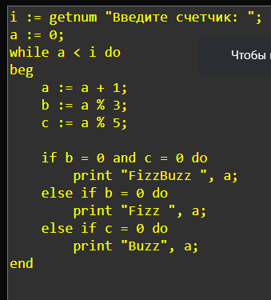
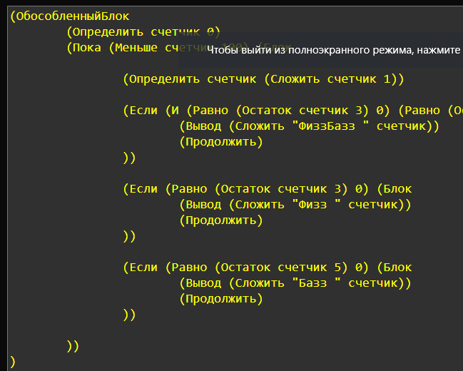
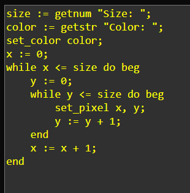
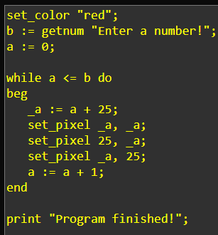

Белоусов Тихон, 10В класс
Создание своего языка программирования
ГУО "Брестский областной лицей им. П.М.Машерова", 2020
Научный руководитель: М.В.Садилова

Полный исходный код проекта вы можете найти на моем github-аккаунте
https://github.com/it1shka

«Есть всего два типа языков программирования: те, на которые люди всё время ругаются, и те, которые никто не использует.»
Bjarne Stroustrup.

Что представляет из себя этот проект?
•Простой, небольшой язык программирования, обладающий понятным синтаксисом и всеми необходимыми базовыми функциями: задание переменных, функций, пользовательский ввод/вывод, математические операторы, циклы, ветвление
•Среда разработки с функциями набора текста, загрузки и сохранения файлов
•Возможность написания программ не только в браузере, но и с помощью среды Node.js
•Библиотеки, написанные на JavaScript для моего языка
Цели, которые я ставил перед собой при выполнении проекта:
•Лушче понять внутреннее устройство языков программирования
•Воплотить некоторые свои идеи насчёт того, как должен выглядеть язык программирования
•Создать простой язык, который подойдёт для обучения программированию и сможет заменить устаревшие Pascal и KuMir
Как создавался проект?
Лексер
Программа(текст) ↓ Поток токенов(слов)
Пример:
print "Hello world!"; ↓ [print, "Hello world!", ;]
Что я использовал для лексера?
1)Регулярные выражения (RegEx)
2)Библиотека moo.js (https://www.npmjs.com/package/moo)

Парсер
Поток токенов ↓ Абстрактное синтаксическое дерево
Пример:
[print, "Hello world!", ;] ↓ {Тип: Вызов, Имя: print, Аргумент: "Hello world!"}
Что я использовал для парсера?
1)Собственная рекурсивная реализация
2)Библиотека Nearley.js
(https://nearley.js.org/)
Исполнитель
1)Переводчик в JavaScript код
2)Исполнитель скомпилированного JavaScript кода
Среда исполнения
Язык ЛИС имеет ДВЕ рабочие версии: раннюю lisp-подобную версию на русском языке и более новую, с синтаксисом, похожим на язык Pascal
ПРИМЕРЫ ПРОГРАММ:
Стало:
Было:
Стало:
Было:


Список использованной литературы:
1) Марейн Хавербеке "Выразительный JavaScript"

1) Дуглас Крокфорд "Как устроен JavaScript"

Спасибо за внимание!
Готов услышать любые ваши вопросы